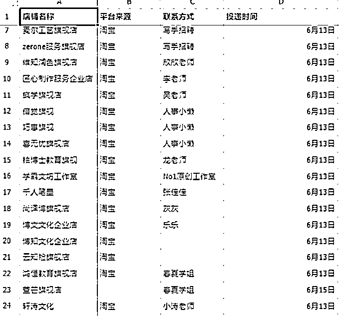
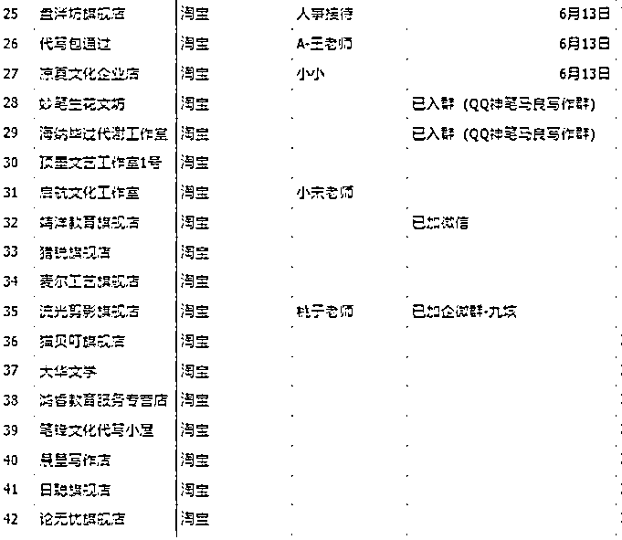
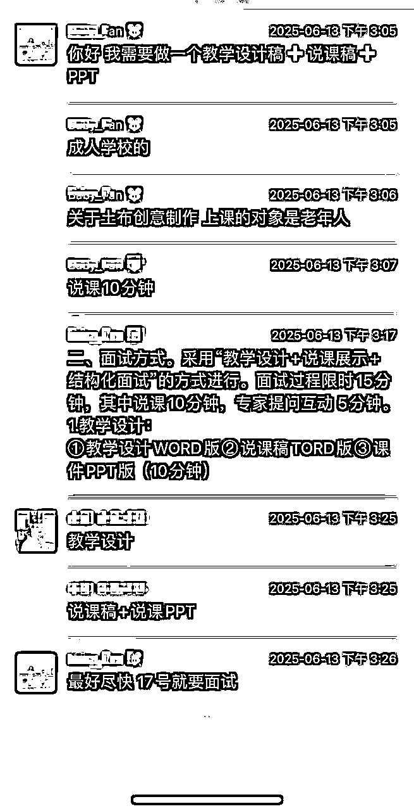
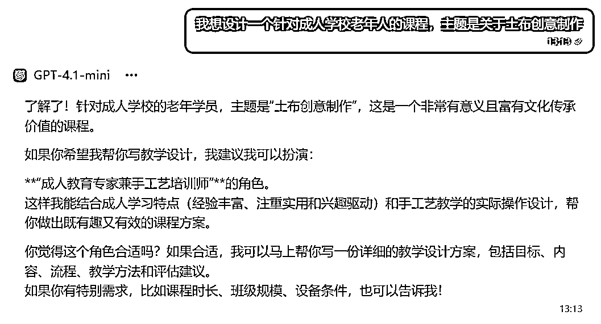
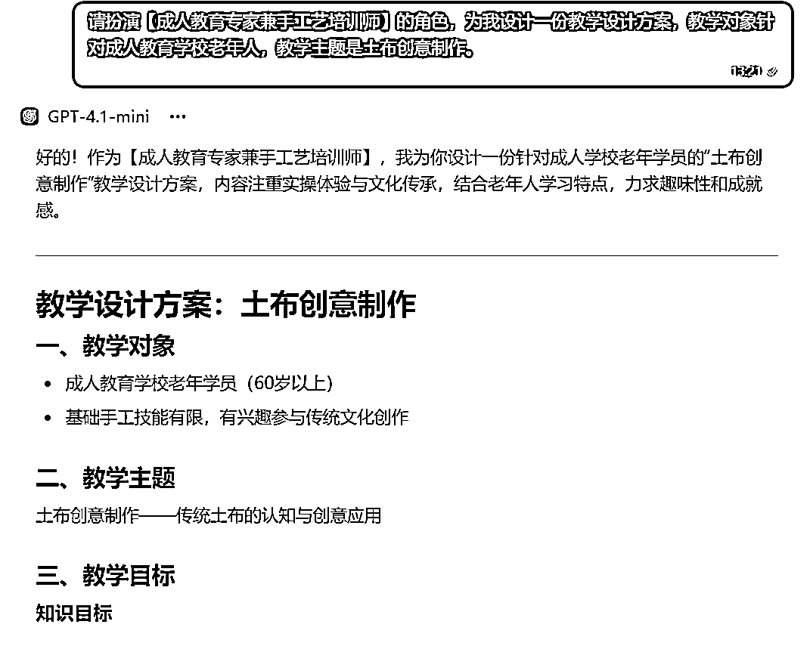
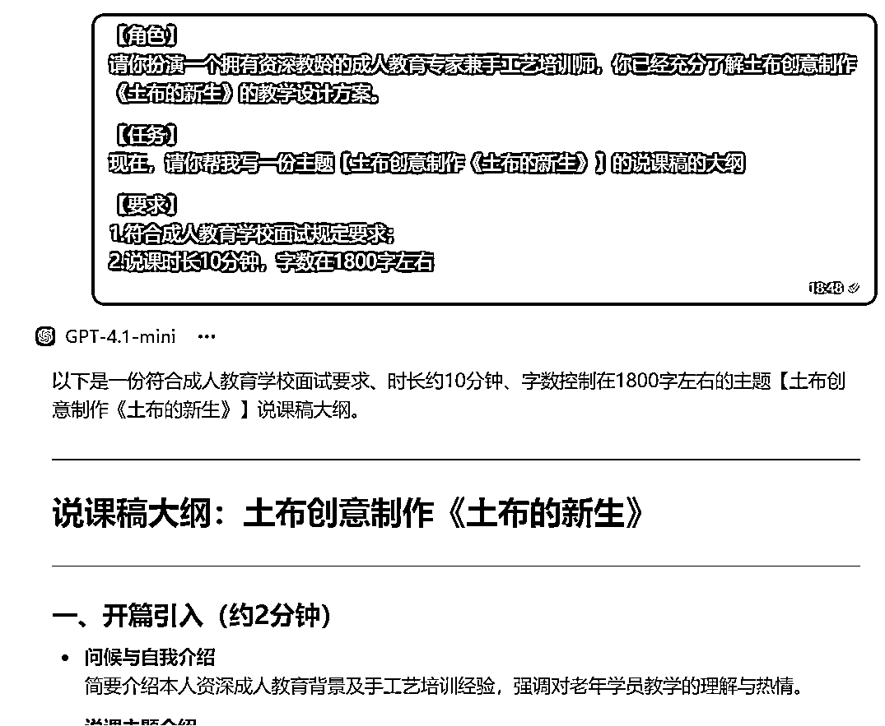
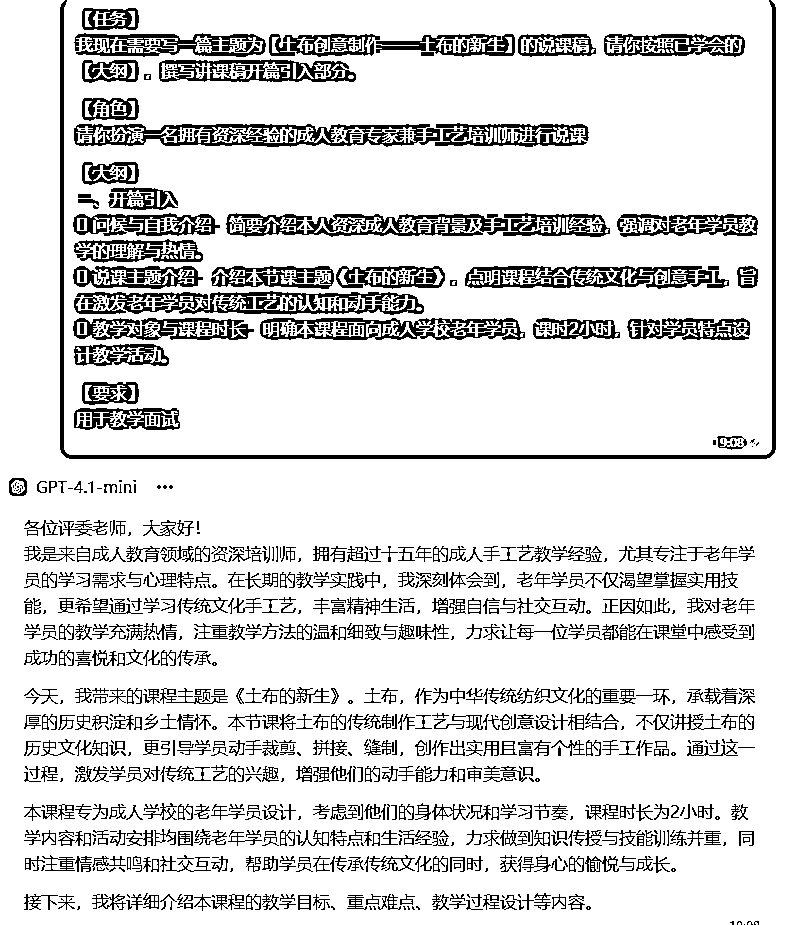
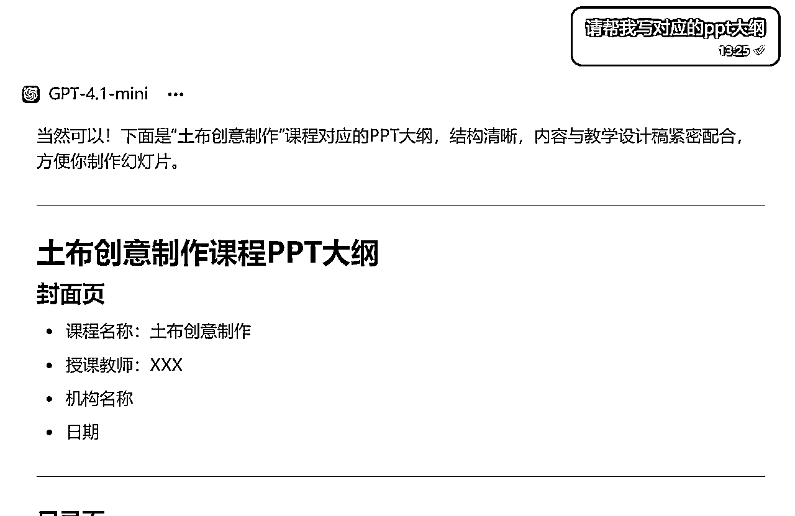
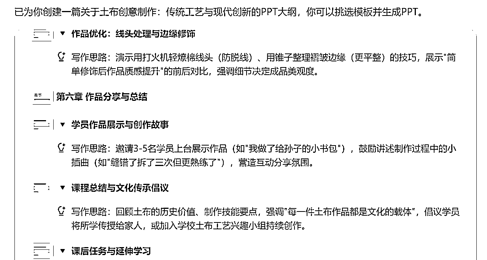

来源：https://fl0l41i319.feishu.cn/docx/NHVPd0lsOoWpZpxORDYcQ78QnOh
大家好，我是甜甜，我是跟着5月份的航海开始做代写的，
作为0基础小白，借助AI完成订单交付，在航海期间实现接单4个，变现600元。
参加这个航海项目主要有两个方面原因，一个是想学习AI写作技能，为我的本职工作提效；二是想通过AI写作变现自身能力。
我自己本身从事文案工作，也会ppt，之前不太敢做代写，只接过我专业领域内的公众号文章、文案策划这些，但这种类型的项目就是有一单没一单，需求量不是很高。接触AI写作后，解决了我的一个核心顾虑，不懂的领域内容怎么快速做出来，之前需要自己查资料研究，现在完全可以借助AI去做这个工作，并快速形成初稿。
那我会认为代写，现在我可以做，也是最直接变现我自身现有能力的项目。
看完航海手册，发现这个AI写作跟我们平时工作的逻辑差不多，就是五步：
找对标（知道这事儿咋干）——资料检索（信息搜集，补充相关知识）——指导AI干活（任务拆解，分步骤完成）——形成初稿——人工润色。
所以就决定直接去实操，通过实战来学习AI写作的方法。
下面就跟大家分享一下，作为小白，怎么从接单到完成交付的，这里我会重点分享一下关于教案设计方面的，希望对刚起步的有所帮助。
一定要勇敢迈出第一步，去做！去做！去做！
前期不要预设太多困难和障碍，遇到问题再说，这些都会成为你日后的经验。
做了没成没任何损失，不做就永远在第一步。
直接去淘宝、天猫给客服发消息就好，不要担心被拒绝，这一家不行，总还有好多家可以选择。
我是海投模式，总共加了40多家，最后成功入群有差不多15个。


在这一步有两点还是要重点注意一下的：
首先说一下接单流程，很简单，关注派单的群消息就好了。
在群里看到合适的单子，加微信，了解订单情况，确定接单，拉群。（基本都是成功拉群之后才算接单完成）
我选择第一单的时候，刚开始发现群里都是做教学设计的订单，我没有做过相关的，后面是看到一个做土布创意课程的，正好自己对这方面有个整体概念，在了解到制作时间比较充足后，就接单了。
接单之后第一步，确认客户需求！！！
主要是明确订单内容（要做哪些事情）、订单要求（质量要求、字数要求、输出格式等）、交付时间（什么时候完成）。

我接的第一单是关于土布创意制作的教学设计，要包含教学设计+说课稿+讲课ppt，下面就以这个订单为例详细跟大家分享一下我的制作过程，希望给第一次接单的学员一点启发。
首先是教学设计，我是第一次做，对于教学设计的基本模块是没有概念的，所以先网上搜了一下，了解教学设计的基本模版和包含哪些内容，然后就开始通过AI进行操作了。


这样一个教学设计就做好了。
人工润色技巧
· 增加一个凸显主题的标题，增加课程的独创性，比如我这个课程的名称——《土布的新生》，当然我们也可以让AI教案内容给10个课程标题。
· 用简洁的短语提炼教学过程，ai输出的内容过于冗杂，需要我们提炼形成清晰的逻辑链路，如引入部分就可以概括为：故事引入——认识材料——激发兴趣，这样我们的教学设计过程就会亮点突出、简洁清晰。
然后是说课稿，我完全是根据学习航海手册里面提到的，用任务分解的方法来一步步操作完成的。


备注：如果不知道说课稿是什么，可以找一下参考，我是第一次写说课稿，每一部分生成的时候没有限定字数，让AI帮我多生成一些内容，这样避免后面修改后字数不够，删减内容还是更方便的。
人工润色技巧
· AI分段生成后，首先是把开头重复的内容删减掉，然后通读保证整体的连贯表达；
· 说课稿核心是口语化的表达，要增加口语化的词语以及连接过渡的词语，如课程伊始、接下来、课程末位、进入XXX等等。


挑选模版的时候，要选择跟自己课件内容主题相匹配的；
下载下来后，要看一下整体效果，有一些不合适的图片要替换一下；
直接生成的ppt还是比较理论化的，具体实操板块要结合客户需求手动补充内容。
初稿完成后，一定要打上水印，wps是有直接添加水印的地方的，然后再发给客户确认，
客户如果满意就直接顺利交付了，如果需要修改，就按照要求调整就好。我这单初稿发出去后客户需要ppt增加实操内容，那根据客户意见，修改完善后就成功交付了。
经过这段时间的接单体验，我猜了一些坑，这里也分享给大家，希望可以帮助大家闭坑。
其实对于新手群的订单，不是急单就是难搞的客户。我其中有一个单子，客户就是要求比较高而且不愿意详细阐述需求，认为既然花钱了，这些都应该我们来搞定，最后交付后还是要求退一半的钱。
这种单子新手最好先不要接，如果接的话就抱着练手的态度，不要有太多心理负担。
我遇到过一个客户，前面沟通的时候说的要求是很简单的，但后面开始做的时候发了一大堆要求出来，而且初稿出来之后，也是会有颠覆性的修改，但都没达到预期。那这种时候呢可以判断一下自己是否能修改达标，如果不能的话就及时止损，告诉客户他这个要求，我们达不到就好，不要再浪费时间。
希望以上这些分享可以帮到大家，也希望大家都可以变现成功！
勇敢迈出第一步，下场去干，会发现也就那么回事；
相信AI一定是你的最佳合伙人，请教AI，会有惊喜。